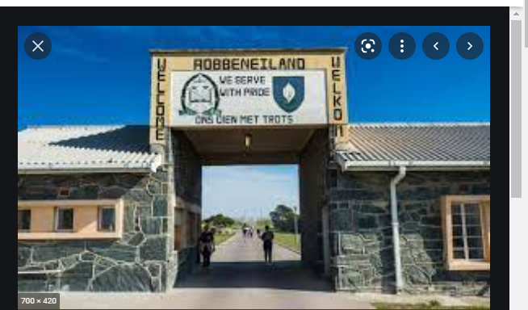
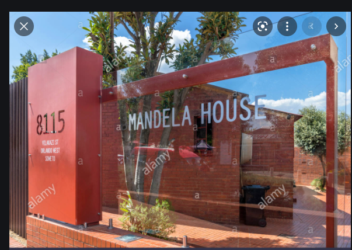
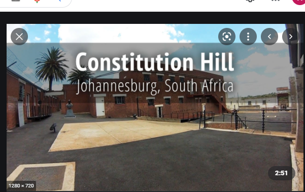

Robben Island is the city i choose, because the place as a whole holds such a rich political history of South Africa and most of South African icons were held there in the apartheid regim. And try out the experince of freedom swim from Robben Island to the Cape Town Shore.

Foreign Language !
Swahili
I would love to learn Swahili, because it is predominantly a mix of local Bantu languages and Arabic. Decades of intensive trade along the East African coast resulted in this mix of cultures. Besides Arabic and Bantu, Swahili also has English, Persian, Portuguese, German and French influences due to trade contact. People whose mother tongue is Swahili, about five to 15 million worldwide, are often referred to as Waswahili.
English
Swahili
Idiom/Phrase meaning
Spill the beans
kumwagika maharagwe
It is the expression used when one has to tell the truth.
cat's out of the bag
paka ametoka kwenye begi
'It simply means letting someone know our secret or stating the facts.
Bite the bullet
Kuuma risasi
Idiom expresses to get something over with because it is inevitable
Call it a day
Tuiite siku
This simply means stop working on something.
Historic Places !
Mandela House
This is the house of the former world icon known as Nelson Mandela It has the following artifacts:
It contains a collection of memorabilia paintings and photographs of mandela family.
The house holds a history of being petrol boomed and set alight several times.
Just up the road from Mandela house, is another famous house of Desmond Tutu and Hector Pieterson Memorial around the corner.

Constitutional Hill Of Human Rights Precint
This is a former prison complex that bears rich teastament of South Africa's turbulent past:
It was the incarceration site that imprisoned the sheer number of world-renowed men and women.
It is also a place of contrasts: of injustice and justice, of oppression and liberation.
It tells the story of South Africa's journey to democracy.

Apartheid Museum
It is the pre-eminent museum in the world dealing with 20th century South Africa, at the heart of which is the apartheid story that shows:
It illustrates the rise and fall of apartheid.
Wanting to understand and experience what South Africa was like in the Apartheid era.
It contains film footage, photographs, text panels and artefacts illustrating the events and human stories that are part of the horrific period in our history, known as apartheid..